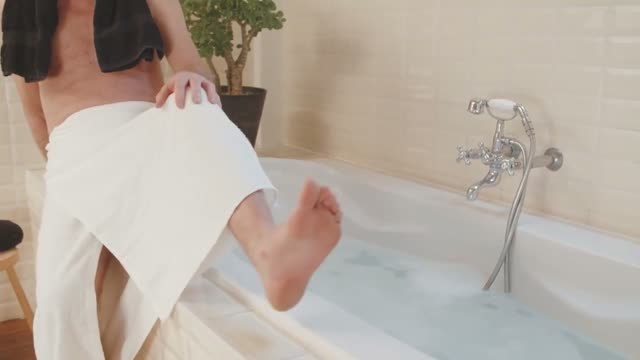
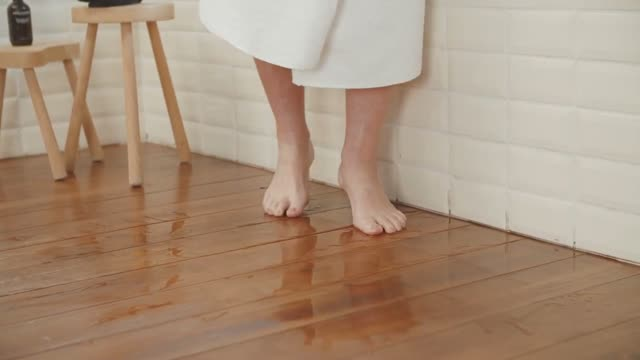
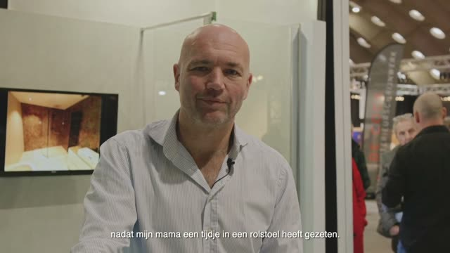
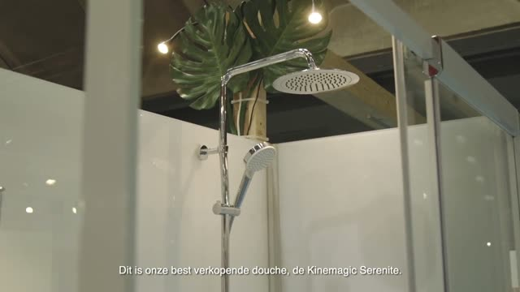
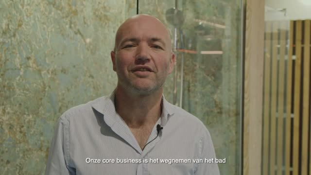
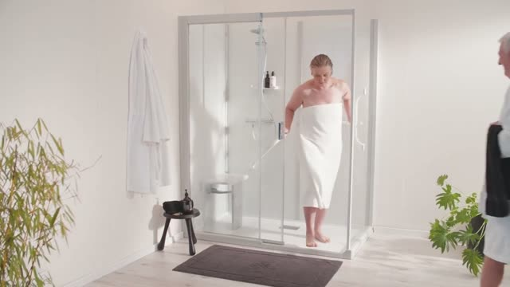

VSL Badkamergevoel: storyboard
Eén video van ongeveer 2,5 minuten, die bovenaan de landingspagina komt en ingekort ook als advertentie draait. Zeven van de tien scènes bestaan al als beeld. Drie shots moeten nog gefilmd worden, en dat kan op één werfdag.

0:00–0:071. Haak
Elke dag over die hoge rand?
- Beeld
- Kinedo-video 00:11–00:15: man tilt zijn been moeizaam over de badrand.
- Geluid
- Claude (voice-over): “Elke dag over die hoge badrand. Hoe lang gaat dat nog goed?”

0:07–0:182. Het probleem
Nat, glad en hard.
- Beeld
- Kinedo-video 00:25–00:29 (natte voeten op gladde vloer) en 00:34–00:36 (man zonder houvast in bad).
- Geluid
- “Nat, glad en hard. De badkamer vergeeft geen misstap.”

0:18–0:453. Wie is Claude
Claude · zaakvoerder sinds 2017
- Beeld
- CK-introductie 00:22–00:48, origineel geluid: Claude vertelt over zijn mama in de rolstoel en waardig wassen.
- Geluid
- Origineel geluid.
Pas beginnen op 00:22. Tussen 00:08 en 00:15 noemt en toont de video Kevin: nooit gebruiken.
 0:45–0:58
0:45–0:584. Het voorschrift
+8.550%*
meer kans op een ongeval, per minuut en per m², in de badkamer · *berekening in beeld · Dokter AI is een gegenereerd personage- Beeld
- Dokter AI (stilstaand beeld), het handgeschreven voorschrift schuift in beeld.
- Geluid
- Dokter AI: “In de badkamer hebt u per minuut en per vierkante meter 8.550 procent meer kans op een ongeval dan in de rest van uw huis. Mijn voorschrift? Een douche waar u gewoon instapt.”

0:58–1:305. Claude toont de douche
Lage instap ✓ Antislip ✓ Zitje ✓ Siliconenvrij ✓
- Beeld
- Serenité-video 00:02–00:35, origineel geluid: Claude toont handvat, zitje, antislip, antikalk en siliconenvrij. Bij elk kenmerk wordt een regel op het voorschrift aangevinkt.
- Geluid
- Origineel geluid.
Stoppen op 00:35. Wie de medewerker met tatoeages op 00:35–00:37 is, is niet bevestigd: niet gebruiken.

1:30–1:436. In één dag
’s Ochtends een bad. ’s Avonds een douche.
- Beeld
- CK-introductie 00:15–00:20: Claude zegt “…en we doen dat in één dag”. Daarna NIEUW: timelapse met vaste camera in de badkamer van een klant, ’s ochtends bad, ’s avonds douche.
- Geluid
- Origineel geluid, dan muziek.
Nieuw te filmen (1/3). Uren pas invullen na de opname.

1:43–1:557. De beloning
Leef langer, veilig thuis en comfortabel.
- Beeld
- Kinedo-video 01:23–01:30: zij stapt fris uit de douche, hij lacht en stapt erin. Daarna de terrasfoto.
- Geluid
- “Langer thuis blijven wonen. Zonder zorgen over die rand.”
- grafiek of nieuw beeld1:55–2:05
8. De premie
Tot €1.250 terug voor 65-plussers
Vlaamse aanpassingspremie · er geldt een inkomensgrens- Beeld
- Grafiek in huisstijl.
- Geluid
- “Bent u 65-plus? Dan krijgt u mogelijk tot 1.250 euro terug. Wij doen de aanvraag.”
- grafiek of nieuw beeld2:05–2:15
9. Bewijs
4,9 op Google · 74 reviews
“Badkuip eruit en douchecabine in de plaats. En dat op 1 dag gedaan.” (juli 2026)
“In één dag geplaatst, proper werk en alles netjes opgeruimd.” (juni 2026)- Beeld
- Google-score en twee echte reviews in beeld, daarna NIEUW: een klant vertelt in haar nieuwe douche.
- Geluid
- Klant, origineel geluid.
Nieuw te filmen (2/3), met schriftelijke toestemming van de klant.
- grafiek of nieuw beeld2:15–2:28
10. Actie
Bel 0493 33 39 88
Badkamergevoel · Zo duurt jong nog een leven lang!- Beeld
- NIEUW: Claude naar de camera, aan de bestelwagen.
- Geluid
- Claude: “Bel mij. Ik kom zelf langs, gratis.”
Nieuw te filmen (3/3).
Uit dezelfde montage
- 15 seconden (Meta, YouTube): scènes 1, 4, 6 en 10.
- 6 seconden (bumper): de hoge rand, dan “’s avonds een douche”, dan het logo.
- Op de landingspagina: de video komt direct onder de opening, met als knop “Bekijk in 2 minuten hoe het werkt”. Het verhaal op de pagina zelf blijft zoals het is, voor wie liever leest.
Nog te regelen
- Drie nieuwe shots op één werfdag: de timelapse, een klant aan het woord en Claude aan de bestelwagen.
- Klantgetuigenis: alleen met schriftelijke toestemming.